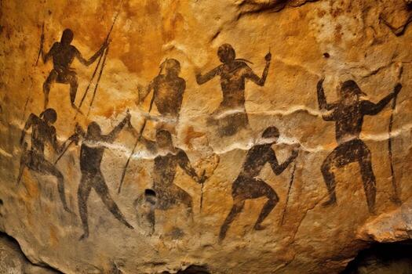
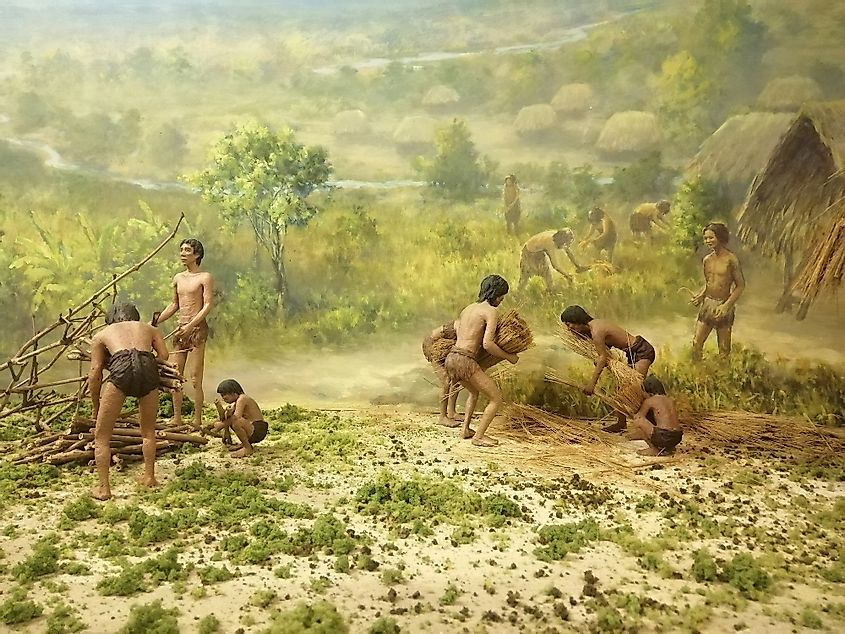
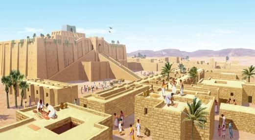
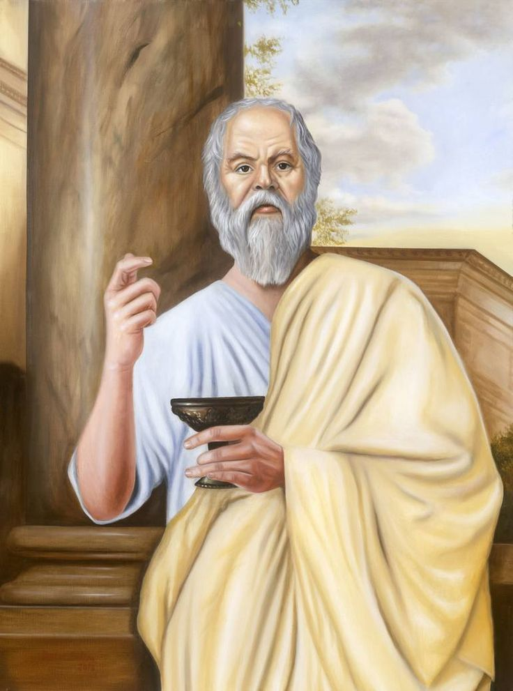
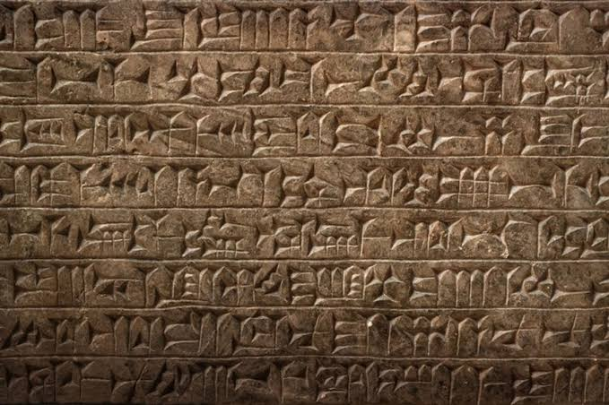

Journey of Human Civilization : From Survival to Wisdom.
Introduction
Story Of Humans
Human civilization is the story of how our ancestors transformed from small groups of hunter-gatherers into builders of
cities, kingdoms, and modern nations. It is a journey marked by curiosity, cooperation, conflict, and the constant
search for knowledge. Understanding civilization helps us understand ourselves

Ancient Depiction of Humans

Agriculture in early days

Ancient Mesopotemia
The Beginning
For most of human history, people lived by hunting animals and gathering plants. They travelled from place to place in
search of food and water. Around ten thousand years ago, humans discovered agriculture, allowing them to settle
permanently and build villages.
The Rise of Civilization
Different Civilizations
Ancient Civilizations were :
Mesopotamia
Ancient Egypt
Indus Valley Civilization
Ancient China
Their Achievements
These civilizations developed :
writing systems
mathematics
laws
architecture
architecture
trade
organized governments etc.
Many ideas from these societies still influence our world today.
The search for wisdom : Birth of Philosophy
The word phillosophy means "love of wisdom." Philosophers sought answers not through tradition alone but through reason,
observation, and discussion.
Questions Philosophers asked :
What is Truth
What is Justice
What is Knowledge
What is Purpose of Life
Can Humans Know Everything
Some famous philosophers :

SocratesImmanuel Kant
Interesting Facts
Writing first appeared in Mesopotemia.

First Ancient Script of Sumeria
The Great Pyramid of Giza is one of the oldest surviving wonders.
Pyramid of Giza,Egypt
Ancient libraries preserved knowledge for future generations.
Remains of Nalanda UniversityBayt Al Hikma(House of Wisdom),Baghdad
Philosophy influenced science, politics, and education.